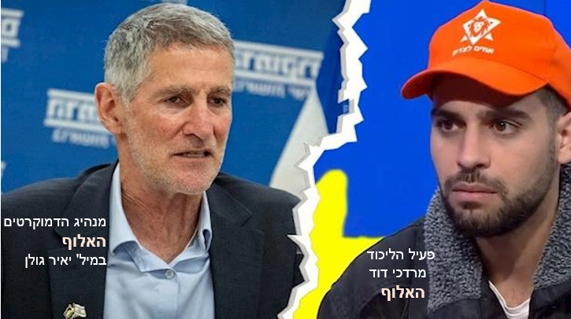

יאיר גולן זיהה את התהליך — אבל טעה בזיהוי המניע

עשר שנים אחרי נאום יום השואה של יאיר גולן, כבר קשה לטעון שהוא טעה בזיהוי התהליך. החברה הישראלית אכן נעשתה אלימה יותר, גסה יותר, חשדנית יותר, ופחות מוכנה לראות ביריב הפוליטי יריב לגיטימי. אבל ייתכן שהוא טעה בדבר עמוק יותר: לא בזיהוי הסכנה, אלא בזיהוי המנוע שלה.
העימות המצולם בין יאיר גולן למרדכי דוד ברחוב בתל אביב נראה במבט ראשון כאירוע קטן. עוד רגע של חיכוך פוליטי, עוד סרטון לרשת. אבל הוויראליות שלו — אלפי תגובות, שיתופים וקליקים — חשפה משהו רחב בהרבה מן התקרית עצמה. היא חשפה כיצד חלק גדול מן הציבור כלל אינו שואל אם מה שקרה היה ראוי, אלא אם ליאיר גולן מותר בכלל להיחשב קורבן.
וזה לב העניין. אצל רבים מתומכי מרדכי דוד, הטיעון אינו שהאירוע לא התרחש, אלא שהוא מוצדק. גולן לא הותקף — “החזירו” לו. זו לא אלימות — זה “בומרנג”. מבחינתם, מי שסימל במשך שנים מחנה שנתפס כמתנשא, מאשים ומדיר, איבד את הזכות ליהנות ממעמד מוסרי של נפגע. ברגע הזה, הכוח אינו נתפס כהפרת גבול, אלא כהשבת סדר.
כאן בדיוק מתברר שמה שמניע חלקים מרכזיים במחנה התומך בשלטון אינו רק אידאולוגיה. לא רק לאומיות, לא רק תפיסת ביטחון, לא רק ויכוח על דמות המדינה. המאבק נחווה שם גם, ולעתים בעיקר, כמאבק על כוח, על מעמד, על הכרה, ועל הפחד לאבד אותם. החלפת שלטון אינה נתפסת רק כחילופי דעות דמוקרטיים, אלא כאפשרות ממשית לחזרתה של הגמוניה ישנה, זו שלתפיסתם שלטה במדינה, קבעה את הטעם, חילקה כבוד, והשאירה אחרים למטה.
מנגד, המחנה הדמוקרטי מדבר בדרך כלל בשפה אחרת. הוא מדבר על דמוקרטיה, על מוסדות, על גבולות הכוח, על אופייה של המדינה. ייתכן שגם אצלו יש פחדים עמוקים יותר, אבל אלה אינם המנוע הגלוי של השיח. לכן ייתכן מאוד שהוא עדיין אינו מבין עד הסוף מול מה הוא נאבק. הוא מתווכח עם טיעונים אידאולוגיים, עם הסתה, עם פופוליזם, עם שחיקת נורמות — אבל אולי מחמיץ את העובדה שמתחת לכל אלה פועל גם מנוע אחר: מאבק עיקש, רגשי, לפעמים כמעט אינסטינקטיבי, על שימור כוח ושליטה.
נדמה שההבנה הזאת קיימת כבר אצל רבים במחנה הדמוקרטי, אבל נותרת בדרך כלל מתחת לפני השטח. היא נאמרת בשיחות פרטיות, בסלונים, בחדרים סגורים. לא נעים לומר אותה בקול. היא אינה פוליטיקלי־קורקט. יש בה משהו חשוף מדי, חריף מדי, אולי גם מעליב מדי. אבל ייתכן שכבר אין ברירה אלא לומר את הדברים כפי שהם. כי כל עוד המאבק מתואר רק כוויכוח אידאולוגי, קשה להבין את עוצמתו האמיתית.
יאיר גולן זיהה נכון את התהליך. הוא זיהה את ההקצנה, את אובדן הבלמים, את האלימות הפוליטית. אבל ייתכן שהוא טעה בזיהוי המניע. לא רק לאומנות קיצונית פועלת כאן, אלא גם מאבק עמוק על כוח, על מעמד ועל שליטה. ובלי לחשוף את המאבק הזה כפי שהוא באמת, יהיה קשה מאוד להתמודד איתו.